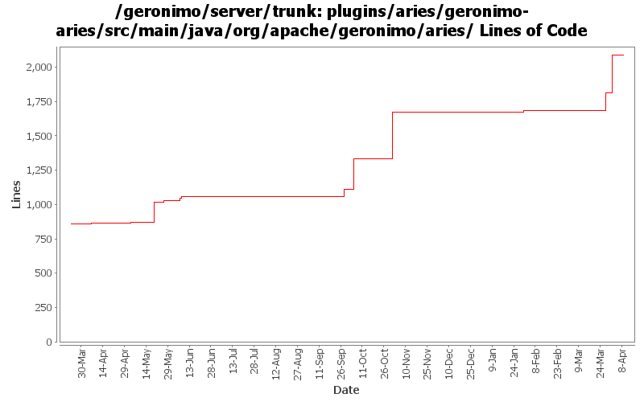

[root]/plugins/aries/geronimo-aries/src/main/java/org/apache/geronimo/aries

| Author | Changes | Lines of Code | Lines per Change |
|---|---|---|---|
| Totals | 41 (100.0%) | 1617 (100.0%) | 39.4 |
| gawor | 19 (46.3%) | 1295 (80.1%) | 68.1 |
| johnxiao | 3 (7.3%) | 278 (17.2%) | 92.6 |
| rwonly | 18 (43.9%) | 43 (2.7%) | 2.3 |
| xuhaihong | 1 (2.4%) | 1 (0.1%) | 1.0 |
Avoid NullPointerException when deploy EBA
2 lines of code changed in 1 file:
GERONIMO-6305 Start bundles in EBA according to bundle dependencies
276 lines of code changed in 2 files:
GERONIMO-6311: Wait for web bundles to initialize fully before allowing application update to avoid a deadlock
136 lines of code changed in 3 files:
GERONIMO-6209: Class hot swap fixes. Properly handle multiple Bundle-ClassPath entries
26 lines of code changed in 1 file:
GERONIMO-6228 Jar resource and getRealPath cache should not be cleaned while uninstalling embedded WAB in EBA
1 lines of code changed in 1 file:
GERONIMO-6209: Class hot swap for OSGi applications
562 lines of code changed in 2 files:
GERONIMO-6181: Better error messages when OSGi application fails to start
245 lines of code changed in 2 files:
GERONIMO-6179: Improve logging and display dependent bundles that will also be refreshed
59 lines of code changed in 1 file:
log full exception is bundle fails to start
5 lines of code changed in 1 file:
GERONIMO-5861: Updated updateApplicationContent() logic to resolve the bundle after updating it - it prevents a potential deadlock with packageadmin on equinox
18 lines of code changed in 1 file:
GERONIMO-5996: Development mode for Aries applications - allow applications to be re-resolved each time they are started
43 lines of code changed in 3 files:
GERONIMO-5963: Keep bundles around if EBA start failed
20 lines of code changed in 1 file:
wrong time unit
1 lines of code changed in 1 file:
GERONIMO-5861: Update a bundle within an EBA - make the bundle update persistent (by rewriting the eba archive)
154 lines of code changed in 2 files:
GERONIMO-5803 EBA cannot work after server restart
29 lines of code changed in 1 file:
GERONIMO-5861: Minor formatting fixes
26 lines of code changed in 1 file:
GERONIMO-5861 changes based on Jarek's comments, thanks
13 lines of code changed in 1 file:
GERONIMO-5861 Update a bundle within an EBA (fix BundleContext might be invalid err)
1 lines of code changed in 1 file:
refact geronimo aries plugin structure
0 lines of code changed in 13 files:
revert the last copy..
0 lines of code changed in 1 file:
split geronimo-aries-build project
0 lines of code changed in 1 file: